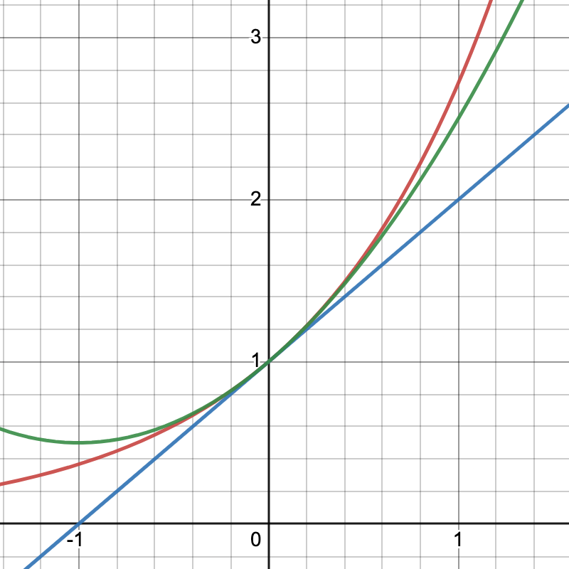

All models are wrong but some models are useful
George E.P. Box
Topics Covered:
How can we approximate mathematical functions that cannot be evaluated exactly?
How does the approximation behave near the approximation point?
Can we quantify the error in the approximation?
2.1 Taylor Polynomials
A fact that is highly underappreciated is that most functions in mathematics cannot be evaluated exactly. Common examples include functions such as \(\exp(x), \cos(x), \ln(x)\).
This leads us to consider ways to approximate a function \(f(x)\) by something else that is easier to compute. Let’s consider the simple case of the exponential:
\[ \exp(x) = \sum_{k=0}^{\infty} \frac{x^k}{k!} = 1 + x + \frac{x^2}{2!} + \frac{x^3}{3!} + \ldots \]
The first approximation we might try is \(1+x\), which is clearly easy to compute, but likely not very accurate. A second attempt might be to use the first three terms \(1 + x + \frac{x^2}{2}\). We could proceed in the obvious way, adding new terms until we are satisifed or we get tired.
But there is an underlying question - when should we stop? One would hope that as \(k\) increases we should get more accuracy, but it’s also clear that the more terms we use the harder is to compute the approximation.
Goal: Find functions that approximate \(f\) at some point, but with some guarantee of accuracy. Hopefully, these approximating functions are also cheaper to compute than the original function.
In numerical analysis there is a constant trade off between accuracy and computational work. We seek to balance these two goals for a given problem.
A first natural approach is to use a polynomial. They are 1) easy to understand, 2) easy to compute, and 3) in general easier to analyze. One commonly used approach is that of approximating a function via a Taylor polynomial. In addition, we will see that Taylor’s Theorem with remainder can be used to analyze our approximations. You should be familiar with both the concepts and how to apply them in different situations.
Definition 2.1 (Taylor Polynomials) Suppose \(f\) is a function with \(n\) derivatives at the point \(x=x_0.\) Then the \(n\)th Taylor polynomial for \(f\) at \(x_0\) is given by:
\[ P_n(x) = f(x_0) + (x-x_0) f^{\prime}(x_0)+ \frac{(x-x_0)^2}{2!}f^{\prime\prime}(x_0) + \cdots + \frac{(x-x_0)^n}{n!} f^{(n)}(x_0) \tag{2.1}\]
Let’s take a quick look at how some of the approximations work on \(exp(x).\)

Some observations:
As \(n\) increases, we might expect accuracy to increase
As we move away from the selected point \(x_0\), we might expect the accuracy to decrease.
Using Taylor polynomials to approximate a function \(f(x)\) leads to several natural questions:
How do we know all the derivatives exist?
What is the error when approximating \(f(x)\) by \(P_n(x)\)?
Given a desired accuracy, how do we choose \(n\)?
The question of the existence of all of the derivatives is a non-trivial one. We will have need of them in order to analyze the approximation, but in practice, one rarely has more than the first derivatives available. For the remainder of the course, we will assume that we have enough derivatives to allow us to proceed with our analysis, but the student should be aware that such assumptions are difficult to establish in real-world problems.
2.2 Taylor’s Theorem
In order to answer questions 2-3 above, we will need the following theorem.
Theorem 2.1 (Taylor’s Theorem with remainder) Let \(f \in C^{n+1}\) on an interval \(I\) containing the real number \(x_0\). Also, let \(P_n(x)\) be the \(n\)th Taylor polynomial of \(f\) at \(x_0\) as defined by Equation 2.1. Then for each \(x\) in \(I\), we can write \[ f(x) = P_n(x) + R_n(x), \] where \(R_n(x)\) is given by: \[ R_n(x) = \frac{(x-x_0)^{n+1} }{(n+1)!} f^{(n+1)}(\xi), \] for some \(\xi\) between \(x_0\) and \(x\).
It is important to note that the value of \(\xi\) will depend on \(x\), (and hence the derivative term \(f^{n+1}(\xi)\)).
Taylor’s theorem will prove to be incredibly useful in our analysis of algorithms. In particular, we will use it to determine the accuracy of various approximations and more importantly it will be essential in the error analysis of algorithms.
We will have use of other forms of Taylor’s Theorem - you should get comfortable recognizing and using them. For example, use the substitution \(h = x - x_0\) to rewrite Taylor’s Theorem.
2.3 Examples/Exercises
Example 2.1 Consider \(f(x) = \exp(x)\). Evaluate the \(nth\) Taylor polynomial about the point \(x_0 = 0\) and evaluate its remainder at \(x_0\).
Solution.
First we write down the Taylor Polynomial for \(f(x) = \exp(x)\) at \(x_0\).
\[ P_n(x) = f(x_0) + (x-x_0) f^{\prime}(x_0)+ \frac{(x-x_0)^2}{2!}f^{\prime\prime}(x_0) + \cdots + \frac{(x-x_0)^n}{n!} f^{(n)}(x_0) \]
Next we note that \(f^{(k)}(x) = \exp(x), k = 0, 1, 2, \ldots\), so all of the derivatives exist. In particular, for the point \(x_0 = 0\), we can also evaluate the function and all of its derivatives, \(e^{x_0} = e^0 = 1 , \forall \ k = 0, 1, \ldots .\)
That means we can write the Taylor polynomial and the remainder term as follows:
\[ \begin{aligned} P_n(x) &= 1 + x + \frac{x^2}{2!} + \cdots + \frac{x^n}{n!} \\ R_n(x) &= \frac{x^{n+1} }{(n+1)!} \large{ e ^{\xi(x)}}, \end{aligned} \]
Exercise 2.1 (In class exercise) Consider \(f(x) = \sqrt[3]{x}\). a) Find the first and second Taylor Polynomials for \(f(x)\) at \(x_0=8\). b) Evaluate both Taylor polynomials at the point \(x=11\).
Solution.
- Let’s break this down into steps:
Step 1. Writing out the first two polynomials using Taylor’s theorem we see that:
\[ \begin{aligned} P_1(x) &= f(x_0) + (x-x_0) f^{\prime}(x_0) \\ P_2(x) &= f(x_0) + (x-x_0) f^{\prime}(x_0)+ \frac{(x-x_0)^2}{2!}f^{\prime\prime}(x_0) \end{aligned} \] Step 2. Now let’s substitue for the point \(x_0=8\): \[ \begin{aligned} P_1(x) &= f(8) + (x-8) f^{\prime}(8) \\ P_2(x) &= f(8) + (x-8) f^{\prime}(8)+ \frac{(x-8)^2}{2!}f^{\prime\prime}(8) \end{aligned} \tag{2.2}\] Step 3. The next step is to calculate the various derivative terms in the polynomial and evaluate them at the point \(x_0=8\). It is helpful to write out a table that includes all of the necessary terms as shown below.
| Term | Evaluation at \(x_0=8\) |
|---|---|
| \(f(x) = \large{\sqrt[3] x}\) | \(f(8) = \large{\sqrt[3] 8} = 2\) |
| \(f^\prime(x) = \Large{\frac{1}{3x^{2/3}}}\) | \(f^\prime(8)= \Large{\frac{1}{3\cdot 8^{2/3}}} = \frac{1}{12}\) |
| \(f^{\prime \prime}(x) = \Large{\frac{-2}{9x^{5/3}}}\) | \(f^{\prime \prime}(8) = -\Large{\frac{2}{9\cdot 8^{5/3}}} = - \frac{1}{144}\) |
Step 4. Finally, inserting these values into Equation 2.2 yields:
\[ \begin{aligned} P_1(x) &= 2 + \frac{(x-8)}{12} \\ P_2(x) &= 2 + \frac{(x-8)}{12} - \frac{(x-8)^2}{288} \end{aligned} \]
- Estimate \(f(11) = {\sqrt[3] 11}\)
\[ \begin{aligned} P_1(11) &= 2 + \frac{(11-8)}{12} = 2.25 \\ P_2(11) &= 2 + \frac{(11-8)}{12} - \frac{(11-8)^2}{288} = 2.21875 \end{aligned} \]
For comparison, \({\normalsize \sqrt[3] 11 } \approx {\normalsize 2.22398009}\)
2.4 Other forms for the Remainder Term
There are alternate forms for the remainder term that you may see, the most common of which is the integral form, which is given by:
\[ R_n(x) = \frac{1}{n!} \int_{x_0}^{x} (x - t)^n f^{(n+1)}(t) dt, \]
It is fairly easy to show that the two forms are equivalent through the use of the Weighted Mean Value Theorem for Integrals (Theorem 1.3). First note that the first term \((x-t)^n\) does not change sign over the interval \([x_0, x]\). Also by assumption \(f^{(n+1)}\) is continuous on the same interval. As a result, we can use the WMVTI as follows.
\[ \begin{aligned} \int_{x_0}^{x} (x - t)^n f^{(n+1)}(t) dt &= f^{(n+1)}(\xi) \int_{x_0}^{x} (x - t)^n dt, \\ &= f^{(n+1)}(\xi) \cdot \frac{\quad - (x - t)^{n+1}}{n+1} \Bigg| _{x_0}^x, \\ &= f^{(n+1)}(\xi) \cdot \frac{\quad (x - x_0)^{n+1}}{n+1}. \end{aligned} \]
The last step follows since the integrand vanishes at the upper endpoint. If We now multiply both sides by \(1/n!\) we get the desired result.
There are other forms of the remainder term as well. The ones presented here are the most common. Which form you decide to use will depend on the particular situation. But it’s nice to have options.
2.5 Choosing \(P_n(x)\) to achieve a desired accuracy
This now leaves us with our finaly question: can we determine what degree polynomial is required for a given accuracy?
Example 2.2 Once again, let’s consider \(f(x) = \exp(x)\). Evaluate the \(nth\) Taylor polynomial about the point \(x_0 = 0\). How big should \(n\) be to approximate \(\exp(1)\) to an accuracy of \(10^{-9}.\)
Solution.
Recall that \[ R_n(x) = \frac{x^{n+1}}{(n+1)!} \cdot \large{e^{\xi}} \] Evaluating at \(x = 1\) gives us \[ R_n(x) = \frac{1}{(n+1)!} \cdot \large{e^\xi} \] Our overall goal is to bound the remainder (error) such that: \[ l \leq R_n(1) \leq u \] where \(l,u\) are some chosen bounds. In general it will be easier to work with the following form:
\[ | R_n(1) | \leq M \] for some value of \(M\), in this case e.g. we would let \(M = 10^{-9}\).
As with many cases in numerical analysis, we will need to make use of any information we may have about the function and the domain we’re working with. In particular for this function we know that, \(0 < \xi < 1,\) by Taylor’s Theorem. That means that: \[ 1 = \large{e^0} < \large{e^\xi} < \large{e^1} = \large{e} \] dividing by \((n+1)!\) we see that: \[ \frac{1}{(n+1)!} < \frac{\large{e^\xi}}{(n+1)!} < \frac{\large{e}}{(n+1)!} \] Note that the middle term is just \(R_n(1)\). Since we’re not supposed to actually know the value of \(\large{e}\), let’s just assume that we know a rough upper bound, say 3, (but we could just as easily have used any other number) and substitute it into the last term. Then what we’re really saying is that we would like to have: \[ | R_n(1) | < \frac{3}{(n+1)!} < 10^{-9} \] A quick calculation suggests that \(n+1 \geq 13\) satisfies this condition, so that a \(12th\) degree Taylor polynomial should gives us the desired accuracy.
Exercise 2.2 (In class exercise)
- Write out the \(nth\) Taylor Polynomial for \(f(x) = \sin (x)\) about \(\pi/4\).
- Find the smallest degree Taylor polynomial such that the remainder \[ | R_n(\pi/4) | < 10^{-6} \]on \([0, \pi/4]\).
2.6 Summary
We showed that we can approximate a given function through the use of a Taylor Polynomial.
Taylor’s Theorem allows us to write down exactly what the remainder (error) term is.
Two (equivalent) forms of the remainder term were introduced: Lagrange form and the Integral Form.
We can estimate the degree of the Taylor Polynomial needed to guarantee a desired accuracy over a given interval.
Useful bounds will depend on knowledge of the given function and its derivatives.
2.7 References
A good online reference for some of the material above can be found at openstax.org.
Another good set of resources are the one-pagers provided by the UCM Math Center. You can check them all out at: UCM The Math Center and in particular the Math 23 refresher one-pager might prove useful: Math 23 refresher.
And of course, there’s always Wikepedia:Taylor’s Theorem
Revised: Tuesday, Sept. 5, 2023